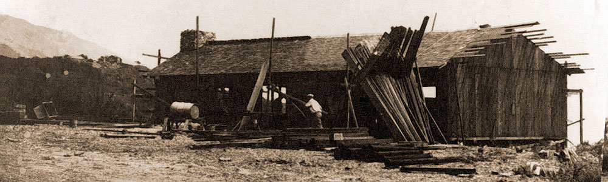
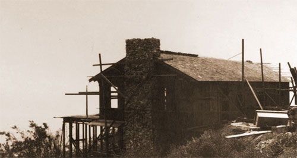
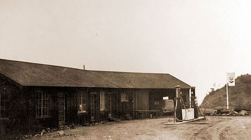
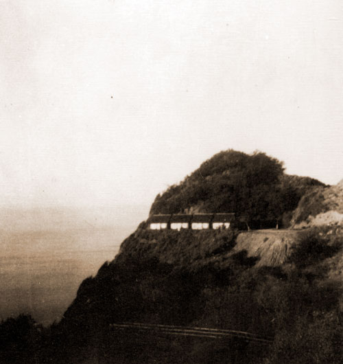
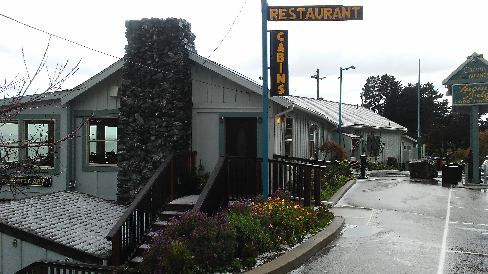

Our Story
History of Lucia Lodge
Five generations of the Harlan family have stewarded this stretch of the Big Sur coast since it was homesteaded in the 1800s. Long before Highway 1 existed, this was simply wilderness — a remote piece of the Santa Lucia Mountains, named for St. Lucy by the Spanish explorer Sebastián Vizcaíno in 1602, tumbling down to meet the Pacific.
What began as a homestead grew, over a century, into a waypoint for travelers along one of the most scenic roads in the country — and, more recently, weathered a loss that tested the family's resolve without ever closing its doors.
The Story
A Century and a Half on One Piece of Coast

The Harlan Homestead
The land is homesteaded by the pioneering Harlan family, among the first to settle this remote stretch of the Big Sur South Coast. Life here was defined by isolation — Long before Highway 1 connected Lucia to the rest of California the nearest town was days away by an overland donkey trail east to the Salinas valley.

Generations Take Root
The family that would come to define this stretch of coastline settled in for the long haul, raising children on the homestead decades before civilization found its way to Lucia. Self-sufficiency wasn't a choice — it was the only way to live here.

Construction of the Lucia store
The Lucia store is constructed to coincide with the completion of Highway 1, using wood milled from the woods above Lucia

Lucia store opens
The Lucia store opens its doors alongside the opening of Highway 1, transforming the homestead into a waypoint for the travelers now passing through. It quickly becomes a fixture for mail, groceries, gas, and coffee — a gathering point for locals, hunters, fishermen, and road-trippers alike, on a coastline where the next stop was an hour or more away.

Construction of the lodge
As Highway 1 brought a steady stream of travelers south from Monterey and north from San Simeon. Accomodations were built starting withthe original four standalone cabins, always oriented toward the water — a design instinct that would define the property's reputation for having some of the best views of the vast Pacific Ocean on the entire coast.

Evolution of the Lodge
Each generation added to what the last one built — new rooms, updated plumbing and wiring, and eventually the ten-room layout guests know today. Through it all, the rooms stayed intentionally simple: no phones, no televisions, nothing to distract from the view and the sound of the surf below.

Fire, and a Family's Resolve
The original restaurant and store are lost to fire. The lodge, 100 yards north, remains open — and in the same pioneering spirit as their ancestors, the Harlan family is rebuilding the store and restaurant that have been a vital part of the Big Sur South community (opening date yet to be determined).

The Fifth Generation
The fifth generation of the Harlan family continues to welcome guests to Lucia, a village named for the metamorphic mountains that surround it — still perched above the same ocean tides their ancestors once looked out on.
Be Part of the Story
Stay Where the History Lives On
Every room at Lucia Lodge carries a piece of this history — book your stay above the same surf five generations have called home.